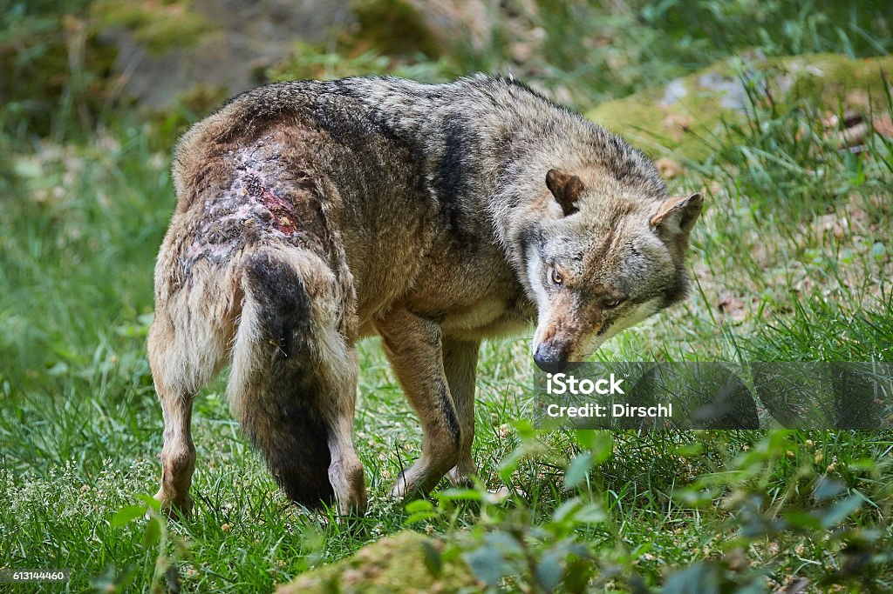

Decides tomar el camino de la izquierda. El sendero es estrecho y los árboles son tan densos que apenas dejan pasar la luz del sol. El aire es frío y húmedo, y cada paso que das parece resonar en el silencio del bosque. Después de caminar un rato, escuchas un sonido extraño que parece venir de entre los arbustos. Es un gemido débil, como si alguien o algo estuviera herido.
Te acercas con cuidado y encuentras un lobo joven atrapado en una trampa. Sus ojos brillan con miedo, pero no te ataca. Parece que está sufriendo. ¿Qué haces?
